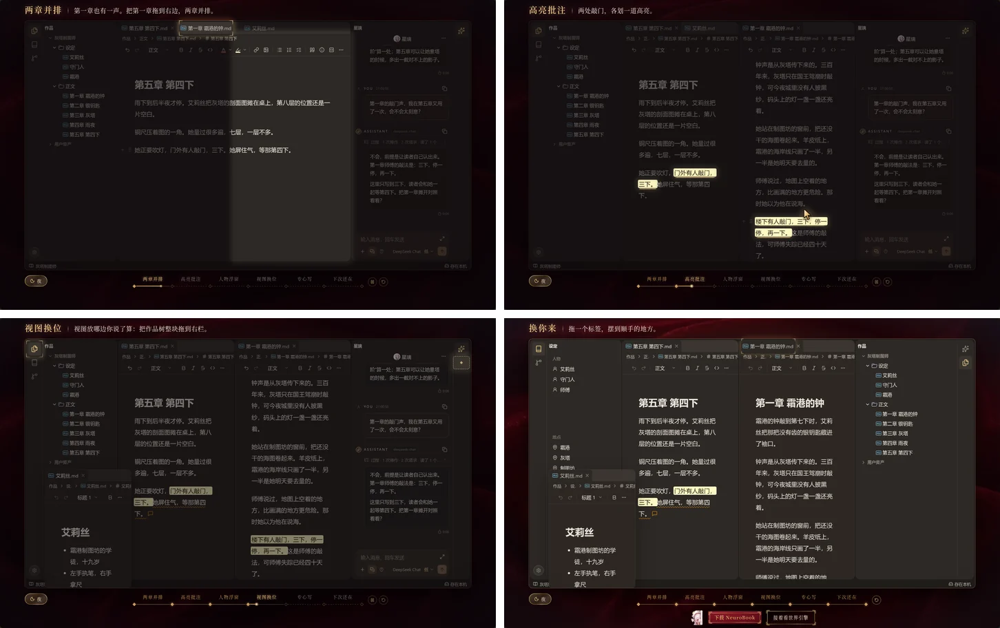
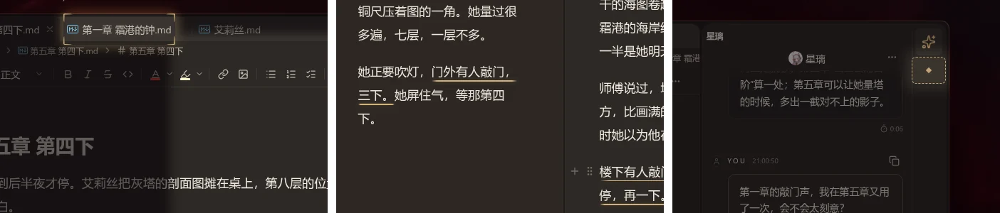
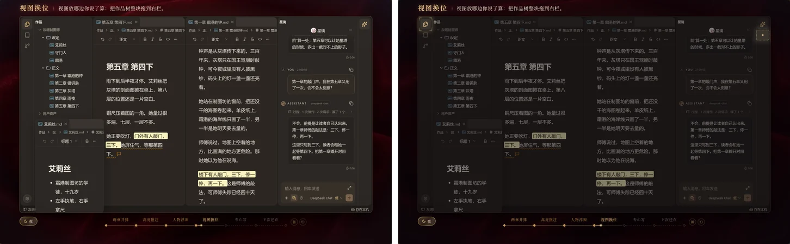
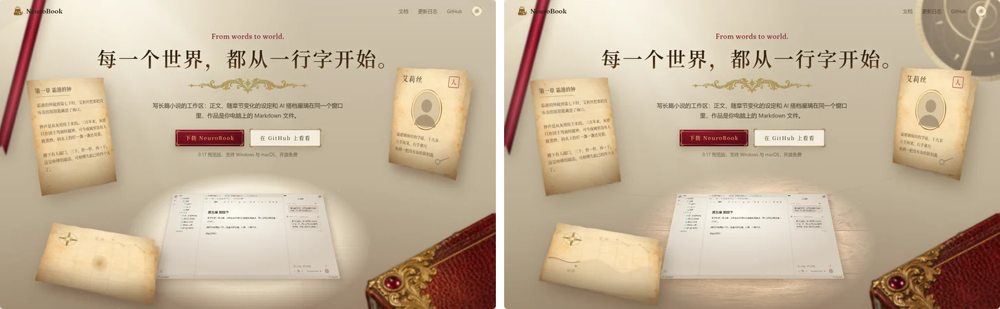
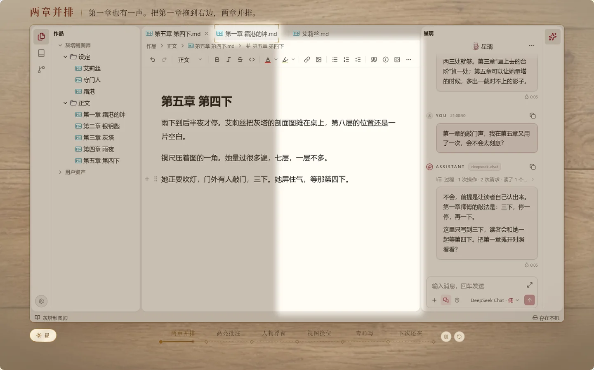

产品介绍首页：入殿·俯案成界（第 9 轮）
照第 8 轮的回答与备注改：高亮的金色矩形换成鎏金标记，夜里的幕压得更深、亮得更久；首屏跟着指针的效果换成提灯与金丝，加了星盘与线索丝两样东西；白天的桌面换成生成的旧橡木。第二幕（编辑器）起的脚本与原型放到下一轮。
高亮换成鎏金标记，好看些了吗？

左上：两章并排，照亮第一章的标签与第一组的右半边。右上：高亮批注，两处高亮按行留亮。左下：视图换位，作品的入口扣金角，右栏侧轨上空着的那一格是落点槽。右下：交给访客，第一章的标签扣一副小金角。

三种标记放大看：四角、按行的下划线、落点槽。

备注里说没做遮罩的那一拍（视图换位）：左边第 8 轮，右边这一轮。
- 按要看的东西分三种：要拖、要看的元素四角扣上金角（从外往里扣进来，停着时轻轻呼吸）；文字按行在字下面铺一道细金线，铺完掠过一道光；空着的落点画一圈虚线槽，中间一颗小菱星。
- 幕：夜里压到约六成黑（第 8 轮是四成），白天是约三成的暖褐；亮口的外扩与羽化都收小，两块亮处挨着时中间仍压暗。
- 每处整段亮 1.5 到 2.1 秒，压到最暗的都在 1 秒以上。第 8 轮视图换位、专心写这两拍整段只有 1.3 秒、0.9 秒，淡入就占 0.4 秒，夜里的幕又只压四成，看着像没压暗。
- 交给访客时，第一章的标签扣一副小金角、漾开两圈，隔一会儿往右挪一下示意能拖。
- 金角扣合、金线铺开与掠光要动起来才看得出，单张截图里看不出来，请在 Lab 里看。
首屏跟着指针的效果，这回看得出来、好看了吗？
左：指针不在页面上，灯熄着。右：指针停在手稿上，手稿受光提亮、边上亮一道，周围一团暖光。上夜下昼。手稿上的高亮与红圈是“从字到世界”走到了那一步，与灯无关。
- 提灯：案面上一团暖光跟着指针，移动时落后约 0.24 秒，快移时顺着方向拉长一点，停下约半秒追上、回圆。离灯近的纸、书角与星盘迎光那一侧亮一道边、整张提亮，影子往灯的反方向挪；标题那一块的光压到四成，不洗白字。
- 金丝：划得快时，指针身后拖一道淡金丝、落几粒微屑，0.35 秒散掉；慢慢移、停在按钮上时没有。
- 纸、书角与丝带的视差加大（前景约 16 像素），跟手也快了（约半秒追上）。
- 删掉了第 8 轮的浮尘被指针带走、停在纸上唤醒细节、丝带被风吹、书角上跟着走的光斑：@designer 也说它们碎而弱，唤醒要等太久。
- 灯怎么跟手、金丝怎么拖出来，单张截图里看不出来，请在 Lab 里快速划过、慢慢移、停在纸上试。
首屏加的两样东西，留哪几样？
左：平时，右上是星盘，线索丝很淡。右：指针停在手稿上，手稿那根丝亮起来、牵到工作台。
- 星盘：右上角一架虚焦、压暗的黄铜星盘，一半在画外。左上有丝带、左下有地图、右下有书角，只剩右上空着；网环约四分钟转一圈，停下来看才发现在动。讲星璃与章节的时间轴。
- 线索丝：三张纸各牵一根淡金丝落到工作台上（手稿到正文、人物卡到右栏、地图到作品树），平时很淡；指针停在或点开哪张纸，那根加亮，一小段光从纸往桌上走。讲正文、设定与工作台连在一起。
- @designer 看了说首屏已经接近饱满，最多补这两样；烛台会抢顶光，羽毛笔与浮在空中的字会干扰标题，都没加。
白天换成旧橡木桌面，可以吗？

左：第 8 轮的亚麻。右：这一轮的旧橡木。

白天的第一幕：四周是橡木，幕是一层暖褐。
- 贴图生成了一次，没有重发。原图偏橙，有一块黑节疤：降了饱和、提了亮，节疤修掉了。
- @designer 建议再漂成冷浅灰的风化木，我没照做：灰木和暖色的羊皮纸、象牙色的工作台放在一起发冷，和夜里的暖调也接不上。想要灰一些，在备注里说。
- 纸与工作台在浅木面上各加了两层影（贴身一层浅的、远一层柔的），才浮得出来。
已定
- 首页给搜索进来的人，做得像产品介绍；书庭这类页面另做、自由发挥（2026-11-26）
- 截图尽量少：直接把工作台复原，让人体验到拖动、分屏与布局动画的丝滑（第 1 轮）
- 第一屏把介绍说明白，同时要有高级精美的动画，让人想往下滚；往下滚进入滚动动画（第 1 轮）
- 基调取 w00050 t06 契约仪式页的史诗、神圣、西幻气氛，不复制；现有的 NovelAI 场景图不直接用（2026-11-26）
- 要讲的功能：写作与编辑器、世界引擎、剧情（在做）、星璃与 Agent、本地与开源、插件与 SDK、桌面版、模型自选；llmlint 不列（2026-11-26）
- 先做方向一《入殿·俯案成界》；材质可以用生成的贴图，首页可以用星璃的立绘与贴纸（2026-11-26）
- 首屏方向不变、先打磨材质；按钮加金边一类的装饰，往皇室奢华感走；工作台缺省夜间配色、可以切换（第 4 轮）
- 第一幕放慢讲清楚，加回浮窗、视图换位置、关掉再打开，和首屏一样华丽（第 4 轮与会话）
- 首句用 e3“每一个世界，都从一行字开始。”，配 From words to world.（第 4 轮与会话）
- 演示的拖动用实时布局；访客动过要有恢复动画；顺手介绍编辑器的标注与高亮；整个页面要有白天；首屏静中有动、纸条可以轮播；按钮出几版（第 5 轮之后的会话）
- 第一幕不用访客滚动：落地以后自动连播，访客愿意就停着看；拖动不要上下左右中的落点分区；首屏的动静要快一些、大一些、更高级（第 6 轮之后的会话）
- 第一幕这样连播可以；章节条用古籍标尺；首屏“从字到世界”与指针响应都要，旁边的东西要能点、点了稍放大，要有跟鼠标位置、速度互动的动画；按钮用皮面烫金；白天要再改；虚拟指针压到菜单之上、拖动快些走弧线、字幕换显眼的地方、重点加遮罩（第 7 轮）
- 字幕放在工作台正上方；重点用遮罩，但高亮要做得好看；首屏能点能动手的几处可以，指针效果要更明显、更好看，考虑多加点元素；白天的桌面换成生成的旧橡木（第 8 轮）